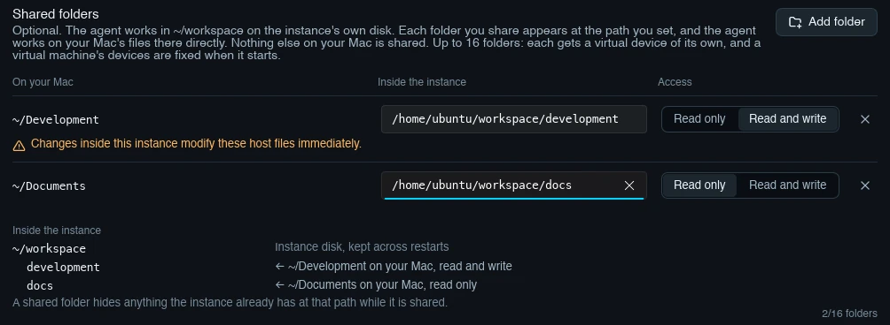

Isolate
Each agent instance runs in its own persistent Linux microVM, built on Apple's Virtualization.framework, with its own disk. Your Mac's files stay out of reach unless you share a folder.
Share up to 16 folders, read only or read and write. The Mac enforces it, so root inside the VM can't lift it.